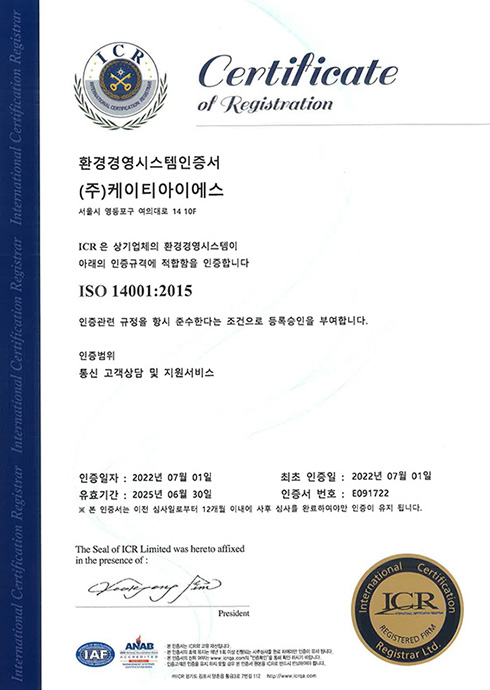

Info
- 공존하며 상생하는 kt is의 ESG경영
- kt is는 고객과 임직원, 지역사회와 주주에게 다양한 가치를 제공하고 지속적으로 만족시켜 신뢰를 얻으며 궁극적으로 사회와 더불어 나아갑니다.
- 그렇기에 kt is의 ESG는 점차 심각해지는 기후변화와 인권 및 고객관계, 그리고 투명하고 청렴한 지배구조에 대해 이해관계자와 함께 고민하고 더 밝은 미래를 만들어갑니다.
- No.1 고객서비스를 제공하는 kt is는 ESG경영을 통해 시대가 요구하는 기업의 책임을 선도적으로 수행하며 상생할 수 있는 지속 가능한 지구를 위해 앞장서겠습니다.
Environment
- kt is 환경경영 정책
- kt is는 지구 환경 개선에 기여하고 'Net Zero 2050' 달성을 위해 환경경영의 대상, 범위, 특성 등을 복합적으로 고려하여
주요 환경경영 정책을 선언하고 방침을 정의하여 긍정적인 환경영향을 최대화하기 위해 노력하겠습니다.
또한, 매년 에너지 및 온실가스, 용수, 폐기물 배출량 항목별 5% 감축을 목표로 정책을 수립하고 아이템을 발굴하고 있습니다. - KT is 환경경영 정책
Governance
- 기업지배구조헌장
- kt is 는 고객의 요구사항 해결을 넘어 숨어있는 니즈까지 선제적으로 발굴하고 해결하여 새로운 가치를 지속 제시함으로써 고객에게 어제보다 더 나은 삶을 제공하는 기업이 되고자 한다.
- kt is 기업지배구조헌장은 주주의 가치제고, 주주총회 및 독립된 이사회와 전문 경영인 간의 견제와 균형의 조화, 회사의 투명한 경영이 정착될 수 있는 전문 감사기구의 독립적 운영 등, 회사 경영의 근간이 되는 건전한 지배 구조의 나아 갈 방향을 선언하고 실행한다. kt is 기업지배구조헌장

닫기
Social